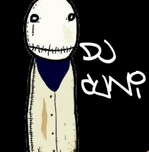
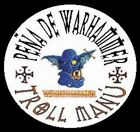

Forums galactiques > Taverne galactique : lieu de discussion informel > olympe
Pages : 1
| athéna Réputation à la taverne : 97  27/05 ETU 13:27 | Score : 0 Détails Zeus prit la parole:
_ « cher commandants je suis heureux de vous accueillir en ce lieu unique qu’est l’olympe afin de célébrer comme il se doit le mariage de ma fille avec ce démon (personne n‘est parfait) . Ma fille ma très cher fille adorée est tu prête à prendre pour époux le jeune démon Renato Mandalore âgé de 100 000 ans pour le meilleur et pour le pire jusqu‘à que la mort vous sépare ? » Athéna répondit _ « oui je le veux » Zeus continua: _« et toi cher Renato Mandalore est tu prêt à prendre pour épouse Athéna ma fille chérie pour le meilleur et pour le pire jusqu’à que la mort vous sépare ? » (je sais j’ai pas dit m’age mais pour une demoiselle cela ne se dit pas voyons!!!!!) Renato Mandalore répondit: _ « oui je le veux » Zeus annonça: _ « vous pouvez embrassez la mariée » (mais il va l’étouffé en mettant sa langue visqueuse si profond) Renato Mandalore annonça : _ « maintenant vous êtes tous prié de vous rendre au Korolev | ||
| Biggie Zounourss Réputation à la taverne : -74  27/05 ETU 13:31 | Score : 0 Détails c'est dechapsgueulasse
| ||
| Le Troll Réputation à la taverne : 75  27/05 ETU 15:54 | Score : 0 Détails Bon, les dieux se marient avec les démons ?
C'est nouveaux ça, en fin bon, vivent les mariés ! |
Pages : 1
Forums galactiques > Taverne galactique : lieu de discussion informel > olympe